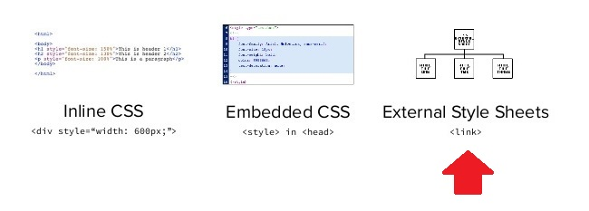

| artigo anterior | index |
Neste exemplo eu vou estilizar todos os parágrafos com a cor vermelha.
Só que, desta vez, vamos utilizar a forma linked (externa).
Precisamos criar um arquivo com o nome arquiv.css e adicionar o código abaixo
entre a tag head do codumento.
<link rel="stylesheet" type="text/css" href="arquivo.css" />Veja o código fonte desta página para entender melhor!
Agora podemos começar a alterar a fonte do documento.